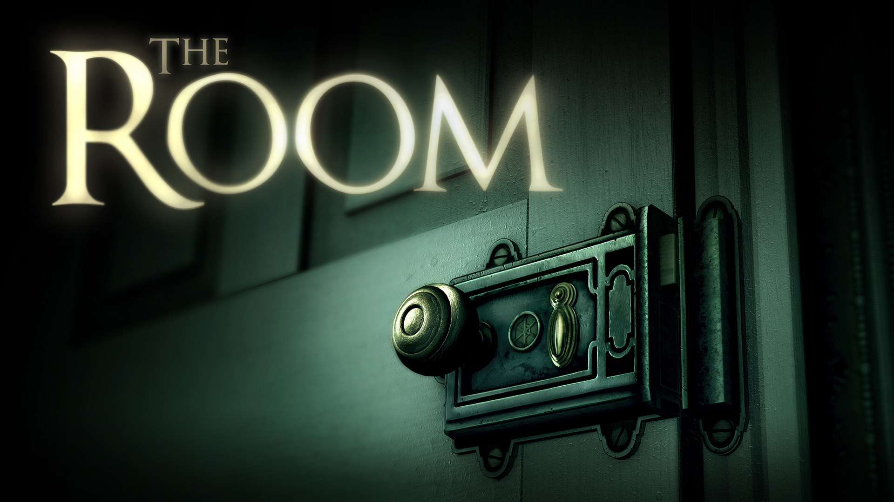
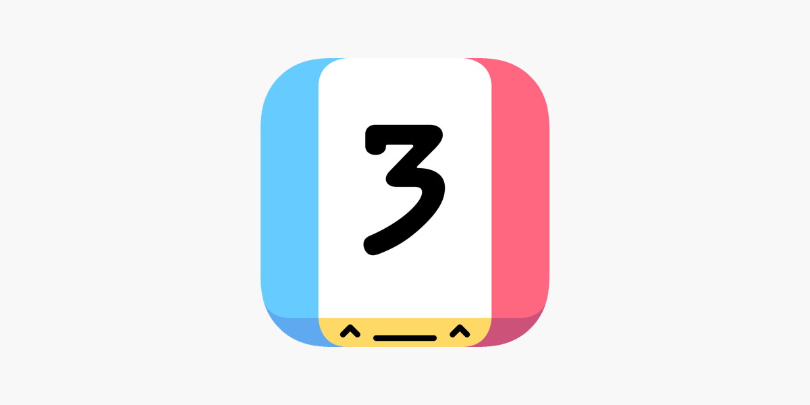

5 Game Puzzle Yang Wajib dimainkan di Android
Monument Valley

Game ini menawarkan pengalaman puzzle yang unik dengan desain visual yang menakjubkan. Pemain harus menavigasi karakter utama melalui struktur geometris yang kompleks, memanipulasi perspektif untuk menyelesaikan teka-teki.
The Room Series

Seri game The Room menawarkan teka-teki yang menantang dan atmosfer misterius. Pemain harus menjelajahi ruangan yang penuh dengan mekanisme rumit dan benda-benda misterius, mencari tahu rahasia di balik setiap level.
Lumino City

Dibuat secara handmade dengan teknik stop-motion, Lumino City menawarkan puzzle yang menarik dengan grafis yang memukau. Pemain akan menjelajahi dunia miniatur yang indah, memecahkan teka-teki, dan mengungkap misteri di balik kisahnya.
Threes!

Sebuah permainan puzzle sederhana namun adiktif, di mana pemain harus menggabungkan angka-angka untuk menciptakan nilai yang lebih tinggi. Konsepnya sederhana namun membutuhkan strategi yang cermat untuk mencapai skor tertinggi.
Two Dots

Game puzzle yang menarik di mana pemain harus menghubungkan titik-titik yang memiliki warna yang sama untuk menghapusnya dari papan permainan. Dengan ratusan level dan tantangan yang semakin sulit, Two Dots menawarkan gameplay yang adiktif dan menyenangkan.